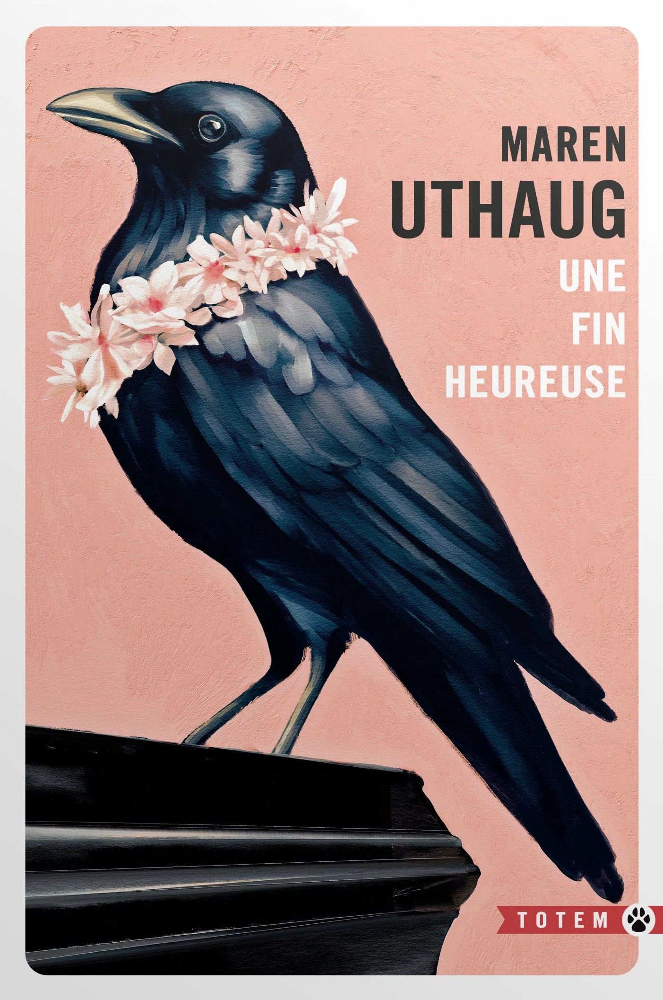
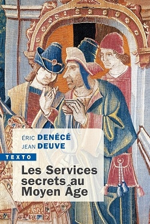
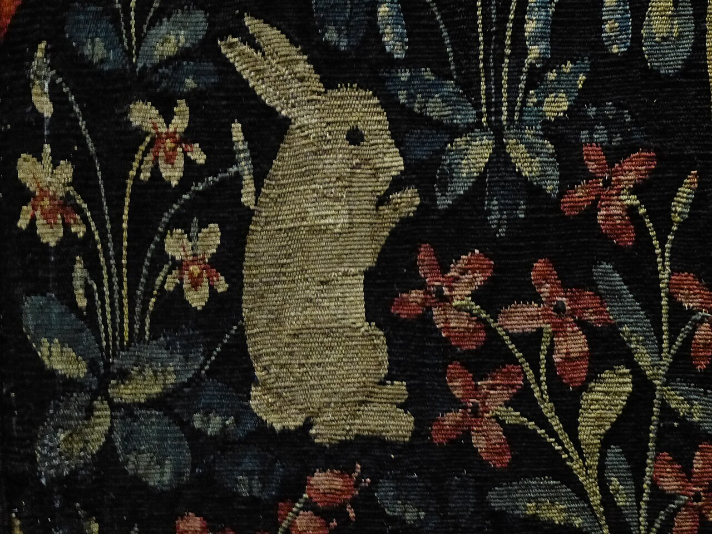

La dernière page de ce livre fermée, j’ai poussé une espèce de soupir mi-soulagé mi-dégoûté. Ce n’est pas qu’il m’ait déplu, c’est que l’autrice danoise Maren Uthaug s’y entend pour susciter le malaise. Une fin heureuse raconte l’histoire d’une dynastie de croque-morts à partir d’un lointain aïeul. Le narrateur, Nicolas, est le dernier en date à s’occuper du commerce familial. Il ne tarde pas à nous annoncer que ses penchants nécrophiles lui posent quelques problèmes moraux : c’est là une question qui va donner lieu à des scènes profondément dérangeantes (autant être prévenu). Le récit du passé familial, reposant par comparaison, nous fait progressivement passer d’un ancêtre à l’autre : on suit en accéléré leur enfance, leur jeunesse et leur vie d’adulte jusqu’à leur mort, avec forcément un passage de relais entre générations. En parallèle, on assiste à l’évolutions des us et coutumes en matière d’hygiène et de funérailles. De façon notable, on touche aussi au fantastique, certains morts n’ayant pas dit leur dernier mot. En gros, c’est un roman qui se laisse lire facilement, que j’ai même globalement aimé, mais qui nécessite d’être prêt à endurer les désirs “inhabituels” du narrateur.
Titre original : En lykkelig slutning / Sortie originale (danois) : 2019 / Version française : 2023 (traduction : Marina Heide et Françoise Heide)

J’ai acheté ce livre en souvenir d’une visite au musée de Cluny, dont je suis aussi reparti avec des jolies chaussettes ornées de petits lapins médiévaux issus de La Dame à la licorne. En plus des petits lapins, j’aime bien les histoires d’espionnage et apprendre des choses sur le Moyen Âge : j’y ai donc vu une occasion de m’instruire en m’amusant. Et on apprend en effet des choses, en particulier sur les nombreuses techniques d’espionnage utilisées par les Byzantins (comparés explicitement aux services secrets russes) et par les Normands, avec notamment un récit de l’invasion de l’Angleterre en 1066. Bon, ce n’est pas de la grande littérature, le texte ne brille pas par son style et j’avoue avoir survolé certains passages certes très informatifs mais que j’aurais immédiatement oubliés de trouve façon. Pour autant, considérant que je n’ai aucune espèce de compétence pour en juger le fond, je suppose que l’effort de synthèse effectué par Eric Denécé (directeur du Centre français sur le renseignement) et Jean Deuve (qui fut directeur du renseignement de l’ancêtre de la DGSE) est à saluer.
Sortie : 2011
